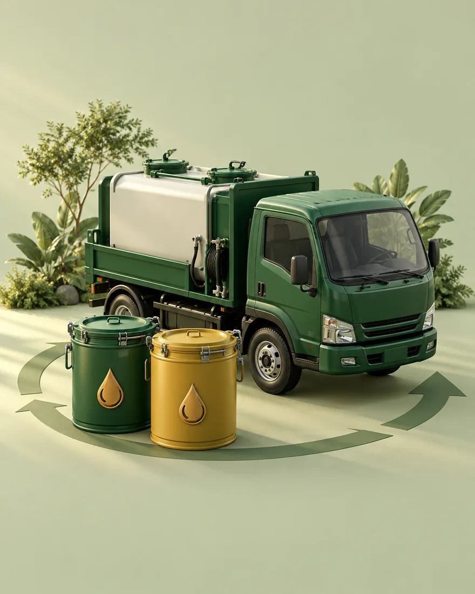

Coleta de óleo
usado em Salto
e região.
Transforme o resíduo da sua empresa em uma nova possibilidade. Compramos óleo de cozinha usado, com avaliação do material e coleta combinada com você.

Um destino melhor.
Um processo mais simples.
Escolha o material que sua empresa gera e encontre o serviço adequado.
Óleo de cozinha
usado
Coleta para restaurantes, padarias, condomínios e outras operações que geram óleo de fritura.
Conhecer o serviçoGordura
vegetal usada
Avaliação de gorduras de fritura e resíduos do preparo de alimentos, conforme as características do material.
Conhecer o serviçoProdutos
vencidos
Avaliação de lotes de alimentos com gordura para descaracterização e destinação adequada.
Conhecer o serviçoDesmoldante
para concreto
Desmoldante à base de óleo vegetal para concreto pré-moldado, artefatos de cimento e formas metálicas. Amostra grátis para todo o Brasil.
Solicitar amostraSem complicar
a sua rotina.
Cada operação tem um volume e uma frequência. A coleta começa com uma conversa para entender o que faz sentido para a sua empresa.
Conte o que você gera
Informe o tipo de resíduo, a cidade e o volume aproximado.
Receba uma avaliação
Alinhamos as condições de compra, acondicionamento e retirada do material.
Combine a coleta
Definimos o agendamento e a documentação aplicável à destinação.
Salto e as cidades
ao redor.
Consulte a disponibilidade para seu endereço. Rota, frequência e volume são definidos na avaliação.
Óleo usado virou
o novo ouro líquido.
Mercado global UCO US$ 8 bi → US$ 15 bi. Petrobras R$ 23 milhões em OGR. Diesel B16. Portaria 2028 obriga ≥1% de OGR no biodiesel. Brasil coleta 180M L/ano — potencial 600M L. 70% inexplorado.
Top 3 do interior SP em negociação
Savegnago (R$7,98bi, #1 ABRAS 2026), Pague Menos (R$4,33bi, #2) e Tauste (#3) — as 3 maiores do interior paulista já negociam conosco.
Redes abriram canal comercial
Savegnago, Pague Menos e Rede Confiança encaminharam para comercial. Covabra convidou para cadastro oficial de fornecedor.
Renda extra/ano (600 L/mês)
200-400 L/mês por restaurante. A R$ 2,00/L, 600 L/mês = R$ 14,4 mil/ano com o resíduo que hoje é descartado.
Corrida pela matéria-prima
Portaria MME/MMA nº 3/2026: ≥1% OGR no biodiesel a partir de jan/2028. Usinas vão disputar óleo — quem fecha contrato agora garante preço.
Aprenda antes de
decidir a destinação.
Respostas sobre preço, coleta e descaracterização de óleo usado e produtos vencidos.
Quem compra maionese vencida?
Maionese vencida tem alto teor de gordura e pode ter destinação industrial. Veja como funciona a avaliação.
Ler o guiaProdutos vencidosQuem compra manteiga vencida?
Manteiga vencida tem alto teor de gordura e pode ter destinação industrial. Veja como funciona a avaliação.
Ler o guiaProdutos vencidosQuem compra margarina e manteiga vencidas?
O lote precisa ser avaliado. Veja quais informações ajudam a definir aceitação, compra e destinação.
Ler o guiaCompra de óleoQuanto vale o óleo de cozinha usado?
O preço não depende só dos litros. Entenda quais características entram na avaliação.
Ler o guiaRotina da cozinhaColeta de óleo usado para restaurantes
Como estimar o volume, organizar os recipientes e combinar uma retirada compatível com a operação.
Ler o guiaAtendimento em SaltoOnde descartar óleo de cozinha usado em Salto?
Como consultar a coleta para sua operação e por que confirmar o ponto de entrega antes de sair.
Ler o guiaBiodieselComo o óleo de cozinha usado vira biodiesel
Conheça o caminho do resíduo e o que a norma de óleos e gorduras residuais estabelece.
Ler o guiaIndústriasÓleo vegetal usado em máquinas: como destinar?
Origem vegetal não basta para definir o destino: o uso e os contaminantes precisam ser considerados.
Ler o guiaProdutos vencidosO que é descaracterização de alimentos?
Entenda o objetivo do processo e o que definir antes de encaminhar um lote para destinação.
Ler o guiaCompra de óleoQuem compra gordura vegetal usada?
Saiba como descrever seu resíduo e por que peso, composição e armazenamento entram na proposta.
Ler o guiaCompra de óleoComo vender óleo de cozinha usado?
Guia passo a passo: o que avaliar no material, como armazenar e como funciona a coleta com destinação para biodiesel.
Ler o guiaSeu óleo usado merece um novo destino.
Conte o que sua empresa gera. Nós avaliamos o material e combinamos os próximos passos.
Quanto vale seu
óleo usado por mês?
Use nossa calculadora online e veja em segundos quanto sua empresa pode gerar com o óleo de cozinha usado. Grátis, sem cadastro.
Restaurante / Padaria
R$ 340/mês · R$ 4.080/ano
Supermercado / Rede
R$ 1.700/mês · R$ 20.400/ano
Indústria / Atacado
R$ 8.500/mês · R$ 102.000/ano